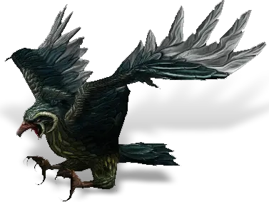

Открыть в интерактивной вики →

| Уровень | лёгк. 175 / норм. 175 / тяжел. 215 |
|---|---|
| Зоны атаки | ближняя, дальняя, ментальная |
| Шанс дропа 100% — уровни | лёгк. 1-125 / норм. 1-125 / тяжел. 1-140 |
| Шанс дропа 90% — уровни | лёгк. 126+ / норм. 126+ / тяжел. -- |
| Шанс дропа 70% — уровни | -- |
| Группа боссов | Ужас |
| Сила (PvE) | норм. 19 222 / тяжел. 25 964 |
| Аспект | Yantrei |
| Здоровье | лёгк. 75 000 / норм. 75 000 / тяжел. 112 500 |
| Мана | лёгк. 15 000 / норм. 15 000 / тяжел. 30 000 |
| Выносливость | лёгк. 15 000 / норм. 15 000 / тяжел. 30 000 |
Локация
- Гнездо Ястребора
- Беирн
- Скальный уступ
- Скальный выступ
- Гнездо Ястреба
Команда

Навыки


Дроп
 Ворлинский Дукат
Ворлинский Дукат  Глиф Подмастерья
Глиф Подмастерья 
 Путь ужаса
Путь ужаса 


 VIII-IX
VIII-IX  Гроссмейстерский глиф
Гроссмейстерский глиф  Даймонит 250
Даймонит 250 | Рары | Синергетики | Эпики | |||
 Рары Рары  Рары Рары  Рары Рары  Рары Рары | 60-100 ур. |  Эпики Эпики | |||
Прочее:  Путь ужаса Путь ужаса  Ворлинский Дукат Ворлинский Дукат  Глиф Подмастерья Глиф Подмастерья | |||||
Требования для входа

Путь по картам
Умения
- Групповая ближняя атака — смертельный удар, боль, мощный удар, летающее колено, кровотечение, удар головой
- Групповая дальняя атака — звуковая волна, налёт
 Боевой Клич Боевой Клич — ярость, немота, транс, паника
Боевой Клич Боевой Клич — ярость, немота, транс, паника
Иммунитеты / особые умения
Устойчивость к обездвиживанию
Призыв: Ястребёнок
Команда